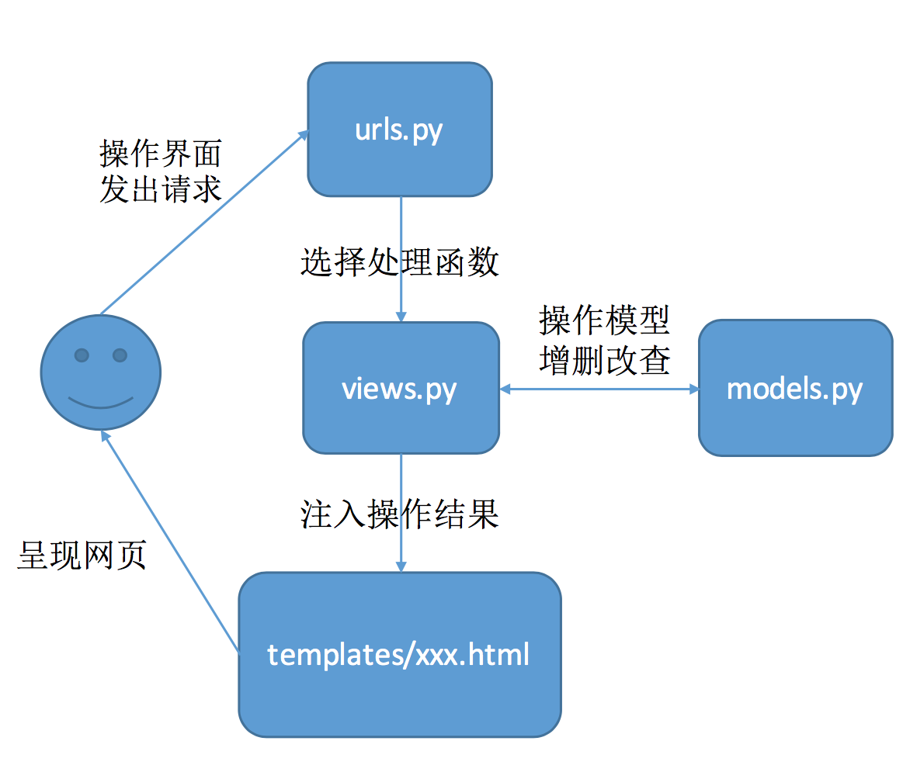
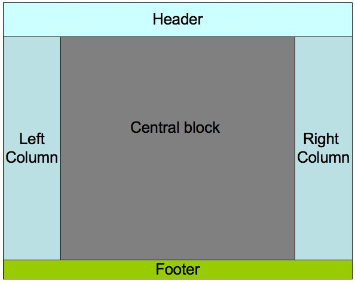

I choose Python Django Framework.
First of all, I have to install Django without sudo. I find pip install --user extremely useful and succeed after a lot of effort.
Second, in order to deploy Django in Apache, I manually build mod_wsgi.so and load this module in httpd.conf. Thus when Apache detects /django in URL, Django will be called to handle it. Since the built-in web server in Django is too weak to be deployed in production environment, I am not able to use Reverse Proxy or Load Balance.
At last, the most important part is coding. Django is a MVC framework, but the names are different:
Here is what every file does:
Guest with four attributes (name, age, gender, email) and interact with database automatically./django/polls/query/ comes, the function query in views.py is called.query fetches all Guest entries from the database and send them to templates/query.html. 
<xsl:attribute> to insert images.<xsl:choose> and <xsl:when> to insert horizontal lines between recipes.Research by loading these files on as many different browser types and versions as you can find (e.g. IE, Opera, Safari and Mozilla family). Snapshot what happens and include these images on your web site.
Experiment with applet graphics (AWT and Swing). Create a simple applet to draw a red square and a green circle.
Add to your applet to draw a third shape, determined by parameters passed from the HTML file that determine the shape and colour to draw.
Write a brief essay outlining the differences between AWT and Swing graphics.
For additional credit: use threads to implement some sort of animation ... try moving the shapes around.
JavaScript browser sniffers are techniques written in Javascript in order to determine the web browser a visitor is using, and to serve browser-appropriate content to the visitor.
Because Javascript relies heavily on DOM, whose interpretation varies in different browsers. To circumvent incompatibilities between browsers and ensure consistent display of content, browser sniffers are used.
Here is what you must achieve:
Sample.java program so that the label (jLabel1)
shows your group number (e.g. 99).RunSample.java program so that it runs with your
group identity (e.g. y2006g99).BufferedReader with a
Scanner and link your code on your web pageGive the SELECT command to answer the question : Who will go to the party held in Peking University?
SELECT Guest_Name
FROM guest, party, guest_party
WHERE party.Party_Num = guest_party.Party_Num
AND guest_party.Guest_ID = guest.Guest_ID
AND Place='Peking University'
Figure out a way to obtain the column labels returned by mysql_fetch_array.
$row = mysql_fetch_array($result);
while ($element = each($row)) {
$element = each($row);
print $element['key'];
}
Tell the difference between a CGI program and a PHP program executed by a Web Server.
Set up PHP for your Apache and test it.
See PHPInfoTransform the guest book that you implemented in week 3 into a Database version.
Click to show answerFor homework3, only one Table is created. This time, create the other two tables, party table and party_guest table( you can choose different table names). Functions realized include:
1) Guest can find out what parties will be given and when and where.
2) In additon to Guest name, Age, Gender, .... User can choose what parties he or she wants to go.
3) Separate PHP programs are provided for the organizer to input information about the parties will be given.
See the link in Homework 3Realize more query functions.
4) Guests can find out what parties will every guest attend.
5) Organizers can find out who will come to their parties and delete useless party items.
Implement a page layout like:

Use CSS and DIV.Your performance of designing the layout will be evaluated in Firefox 3.5. However, you are encouraged to test your layout in as many browsers as possible. You will receive a bonus if you design layout that has the same appearance in IE6, IE7+, Opera, Safari, etc. and mention this effort in your homework. Remember Maxthon, Sogou and Tencent Traveler are not considered as individual browsers, for they are only shell of IE. Also, try to pass both the W3C Markup Validation and the W3C CSS Validation, then place "valid" icon(s) on your web pages. The icons can be found on the page showing you passed validation.
- The left column and the right column must be of the same width, which could be fixed.
- The right column always floats to the right.
- The left column and the right column must be of the same height no matter what do they contain.
- Inline style, Internal style sheet and External style sheet must all be used in the homework.
Study the "Survey" example in the text book carefully. Try it first.
Implement a little "Questionare" using Perl. Information to be collected include:
- Name.
- Age.
- Gender.
- E_mail address.
In addition to the Submit button, a Query button is provided for the user to see all data items have been collected. User should also be able to delete selected Items.
Tips:
- Three CGI program are needed, one to collect data items, one to list items, the other to delete selected items.
- To delete items, for convenience, a check box could be provide to each data item being listed. After user click "delete", all checked items are deleted.
- Error check for the input data is not required.
- To prevent simultaneous accesses to a single file, "flock" function is used. please refer to the Survey example in the text book.
- In order to be run, the CGI program file should has a file mode of 711, which says it can be executed by any user.
- Put the CGI program in the directory of "cgi-bin" under you Server root Directory.
- The file which saves the collected data should be created first and should be writable for other users. A file mode 666 is needed.
- The error.log file in the directory of "logs" will help you to debug your CGI program in case of error.
You are encouraged to improve this questionaire in some way. For example, you could use AJAX to update the information without refreshing the page, write three versions of this questionaire in Perl, C CGI and Shell CGI, or make pages produced by CGI pass W3C validations. Any efforts made should be listed in your pages as they deserve a reward.
Create a HTML pages including :
HTML validation PASSED
For the three categories of web software technology we've just defined, you are asked to find out which category so-called "Netscape plug-in" technology belongs to. Please describe the basic idea of the technology, and give your reasoning on its position in the technology categories.
In a normal intercommunication between Web browser and Web Server, Web Server closes the network communication right after it sends back the document requested by the browser. Think about this statusless character of World Wide Web. Give some good points and bad points of it. Can a web server know exactly how many browsers are reading its document?
Use some Web search engine to search keywords regarding your interest (even your own name to find out how famous you are in this Web World). Recommended search engines are http://www.baidu.com/ and http://www.google.com/